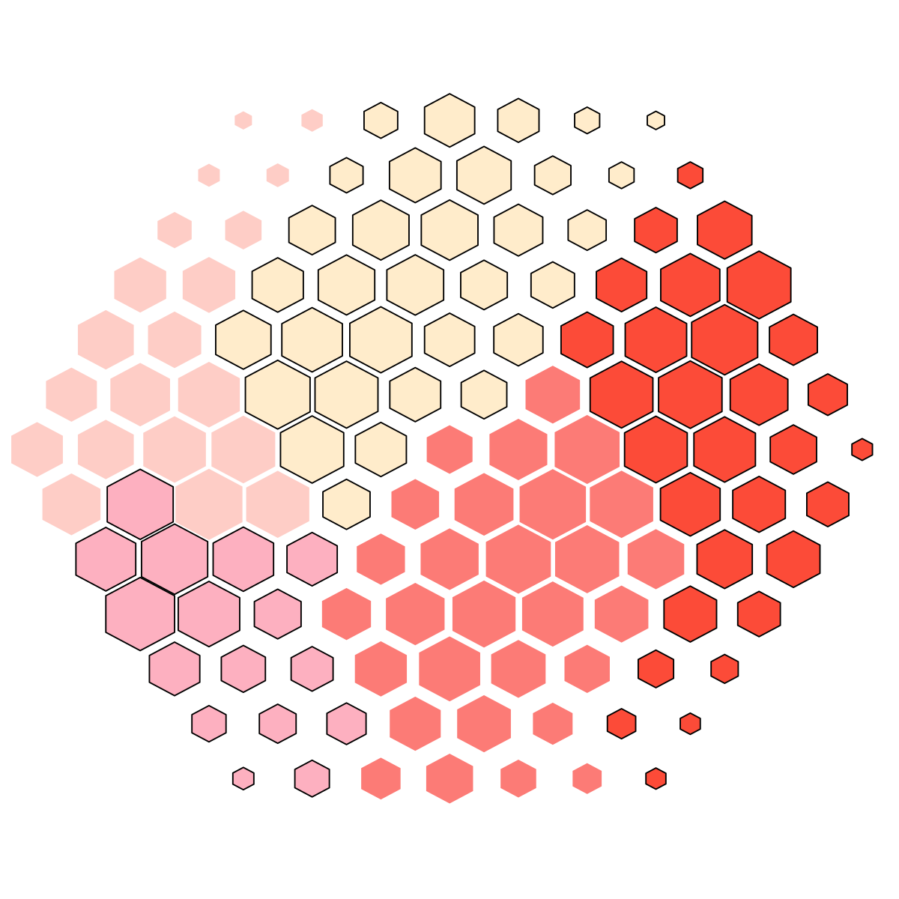

Loading required package: ape
Loading required package: graph
Attaching package: ‘graph’
The following object is masked from ‘package:ape’:
edges
Loading required package: Rgraphviz
Loading required package: igraph
Attaching package: ‘igraph’
The following objects are masked from ‘package:graph’:
degree, edges
The following object is masked from ‘package:ape’:
edges
Loading required package: Biobase
Loading required package: BiocGenerics
Loading required package: parallel
Attaching package: ‘BiocGenerics’
The following objects are masked from ‘package:parallel’:
clusterApply, clusterApplyLB, clusterCall, clusterEvalQ,
clusterExport, clusterMap, parApply, parCapply, parLapply,
parLapplyLB, parRapply, parSapply, parSapplyLB
The following object is masked from ‘package:stats’:
xtabs
The following objects are masked from ‘package:base’:
anyDuplicated, append, as.data.frame, as.vector, cbind, colnames,
do.call, duplicated, eval, evalq, Filter, Find, get, intersect,
is.unsorted, lapply, Map, mapply, match, mget, order, paste, pmax,
pmax.int, pmin, pmin.int, Position, rank, rbind, Reduce, rep.int,
rownames, sapply, setdiff, sort, table, tapply, union, unique,
unlist
Welcome to Bioconductor
Vignettes contain introductory material; view with
'browseVignettes()'. To cite Bioconductor, see
'citation("Biobase")', and for packages 'citation("pkgname")'.
Loading required package: limma
Attaching package: ‘limma’
The following object is masked from ‘package:BiocGenerics’:
plotMA
Loading required package: dnet
############################################################
# Preprocess data (this should be done as your data suggest)
############################################################
# import data containing three variables ('Fang', 'Fang.geneinfo' and 'Fang.sampleinfo')
data(Fang)
data <- Fang
fdata <- as.data.frame(Fang.geneinfo[,2:3])
rownames(fdata) <- Fang.geneinfo[,1]
pdata <- as.data.frame(Fang.sampleinfo[,2:3])
rownames(pdata) <- Fang.sampleinfo[,1]
# create the 'eset' object
colmatch <- match(rownames(pdata),colnames(data))
rowmatch <- match(rownames(fdata),rownames(data))
data <- data[rowmatch,colmatch]
eset <- new("ExpressionSet", exprs=as.matrix(data), phenoData=as(pdata,"AnnotatedDataFrame"), featureData=as(fdata,"AnnotatedDataFrame"))
# A function to convert probeset-centric to entrezgene-centric expression levels
prob2gene <- function(eset){
fdat <- fData(eset)
tmp <- as.matrix(unique(fdat[c("EntrezGene", "Symbol")]))
forder <- tmp[order(as.numeric(tmp[,1])),]
forder <- forder[!is.na(forder[,1]),]
rownames(forder) <- forder[,2]
system.time({
dat <- exprs(eset)
edat <- matrix(data=NA, nrow=nrow(forder), ncol=ncol(dat))
for (i in 1:nrow(forder)){
ind <- which(fdat$EntrezGene==as.numeric(forder[i,1]))
if (length(ind) == 1){
edat[i,] <- dat[ind,]
}else{
edat[i,] <- apply(dat[ind,],2,mean)
}
}
})
rownames(edat) <- rownames(forder) # as gene symbols
colnames(edat) <- rownames(pData(eset))
esetGene <- new('ExpressionSet',exprs=data.frame(edat),phenoData=as(pData(eset),"AnnotatedDataFrame"),featureData=as(data.frame(forder),"AnnotatedDataFrame"))
return(esetGene)
}
esetGene <- prob2gene(eset)
esetGene
ExpressionSet (storageMode: lockedEnvironment)
assayData: 4139 features, 18 samples
element names: exprs
protocolData: none
phenoData
sampleNames: S9_R1 S9_R2 ... S14_R3 (18 total)
varLabels: Stage Replicate
varMetadata: labelDescription
featureData
featureNames: A2M AADAC ... LOC100131613 (4139 total)
fvarLabels: EntrezGene Symbol
fvarMetadata: labelDescription
experimentData: use 'experimentData(object)'
Annotation:
Start at 2015-06-04 10:43:41
First, define topology of a map grid (2015-06-04 10:43:41)...
Second, initialise the codebook matrix (127 X 6) using 'linear' initialisation, given a topology and input data (2015-06-04 10:43:41)...
Third, get training at the rough stage (2015-06-04 10:43:41)...
1 out of 2 (2015-06-04 10:43:41)
updated (2015-06-04 10:43:41)
2 out of 2 (2015-06-04 10:43:41)
updated (2015-06-04 10:43:41)
Fourth, get training at the finetune stage (2015-06-04 10:43:41)...
1 out of 2 (2015-06-04 10:43:41)
updated (2015-06-04 10:43:41)
2 out of 2 (2015-06-04 10:43:41)
updated (2015-06-04 10:43:41)
Next, identify the best-matching hexagon/rectangle for the input data (2015-06-04 10:43:41)...
Finally, append the response data (hits and mqe) into the sMap object (2015-06-04 10:43:41)...
Below are the summaries of the training results:
dimension of input data: 4018x6
xy-dimension of map grid: xdim=13, ydim=13
grid lattice: hexa
grid shape: suprahex
dimension of grid coord: 127x2
initialisation method: linear
dimension of codebook matrix: 127x6
mean quantization error: 0.108267518704114
Below are the details of trainology:
training algorithm: batch
alpha type: invert
training neighborhood kernel: gaussian
trainlength (x input data length): 2 at rough stage; 2 at finetune stage
radius (at rough stage): from 4 to 1
radius (at finetune stage): from 1 to 1
End at 2015-06-04 10:43:41
Runtime in total is: 0 secs

# As you have seen, the map distance (the hexagon size) tells how far each node is away from its neighbors, thus characterising relationships between clustered genes. The map is also partitioned to obtain gene meta-clusters covering continuous regions, as colour-coded by the 'potato-peach-tomato' colormap.
){kind=link}